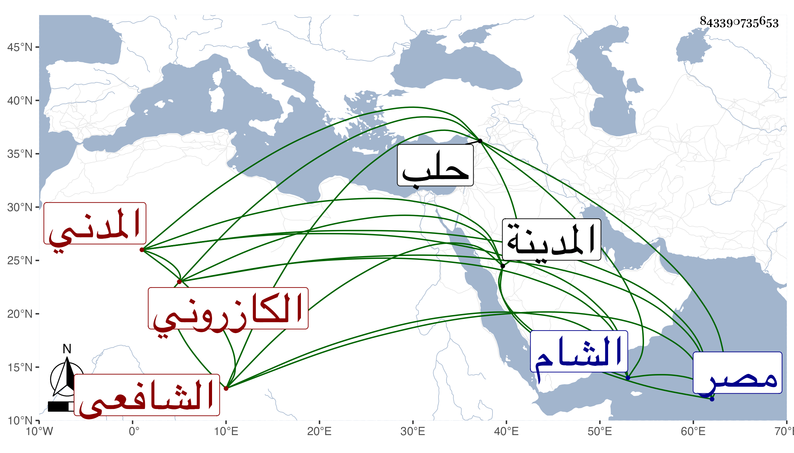

0902Sakhawi.DawLamic.ITO20230111-ara1.EIS1600.843390735653
Biography ID: 843390735653
235
أبو بكر بن الشيخ فتح الدين أبي الفتح محمد بن محمد تقي بن عبد السلام الكازروني المدني الشافعي أخو الشمس محمد وعبد السلام وأبو بكر أصغرهم وأمه فاطمة ابنة أبي اليمن المراغي . ولد سنة سبع وأربعين بالمدينة ونشأ فحفظ أربعي النووي ومنهاجه واشتغل عند أبيه والأبشيطي وغيرهما ولازم للسمهودي وسمع على أبي الفرج المراغي وغيره وتزوج أم كلثوم أخت البرهان الخجندي واستولدها محمدا وأبا الفتح ودخل مصر والشام وغيرهما لطلب الرزق وتميز وفضل وهو في سنة ثمان وتسعين بحلب .
